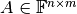
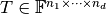
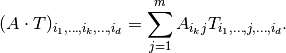
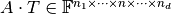

MatrixOperator¶
- class odl.operator.tensor_ops.MatrixOperator(*args, **kwargs)[source]¶
Bases:
OperatorA matrix acting as a linear operator.
This operator uses a matrix to represent an operator, and get its adjoint and inverse by doing computations on the matrix. This is in general a rather slow and memory-inefficient approach, and users are recommended to use other alternatives if possible.
- Attributes:
adjointAdjoint operator represented by the adjoint matrix.
axisAxis of domain elements over which is summed.
domainSet of objects on which this operator can be evaluated.
inverseInverse operator represented by the inverse matrix.
is_functionalTrueif this operator's range is aField.is_linearTrueif this operator is linear.matrixMatrix representing this operator.
rangeSet in which the result of an evaluation of this operator lies.
Methods
__call__(x[, out])Return
self(x[, out, **kwargs]).derivative(point)Return the operator derivative at
point.norm([estimate])Return the operator norm of this operator.
- __init__(matrix, domain=None, range=None, axis=0)[source]¶
Initialize a new instance.
- Parameters:
- matrix
array-likeorscipy.sparse.base.spmatrix 2-dimensional array representing the linear operator. For Scipy sparse matrices only tensor spaces with
ndim == 1are allowed asdomain.- domain
TensorSpace, optional Space of elements on which the operator can act. Its
dtypemust be castable torange.dtype. For the defaultNone, a space with 1 axis and sizematrix.shape[1]is used, together with the matrix' data type.- range
TensorSpace, optional Space of elements on to which the operator maps. Its
shapeanddtypeattributes must match those of the result of the multiplication. For the defaultNone, the range is inferred frommatrix,domainandaxis.- axisint, optional
Sum over this axis of an input tensor in the multiplication.
- matrix
Notes
For a matrix , the operation on a tensor  is defined as the summation

It produces a new tensor .
Examples
By default,
domainandrangeare spaces of with one axis:>>> m = np.ones((3, 4)) >>> op = MatrixOperator(m) >>> op.domain rn(4) >>> op.range rn(3) >>> op([1, 2, 3, 4]) rn(3).element([ 10., 10., 10.])
For multi-dimensional arrays (tensors), the summation (contraction) can be performed along a specific axis. In this example, the number of matrix rows (4) must match the domain shape entry in the given axis:
>>> dom = odl.rn((5, 4, 4)) # can use axis=1 or axis=2 >>> op = MatrixOperator(m, domain=dom, axis=1) >>> op(dom.one()).shape (5, 3, 4) >>> op = MatrixOperator(m, domain=dom, axis=2) >>> op(dom.one()).shape (5, 4, 3)
The operator also works on
uniform_discrtype spaces. Note, however, that theweightingof the domain is propagated to the range by default, in order to keep the correspondence between adjoint and transposed matrix:>>> space = odl.uniform_discr(0, 1, 4) >>> op = MatrixOperator(m, domain=space) >>> op(space.one()) rn(3, weighting=0.25).element([ 4., 4., 4.]) >>> np.array_equal(op.adjoint.matrix, m.T) True